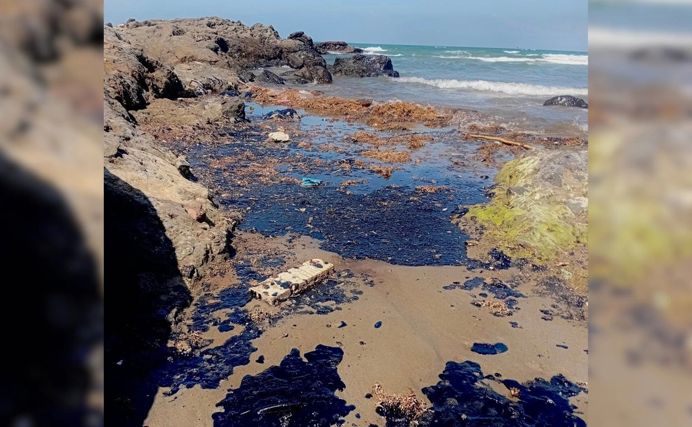
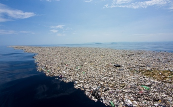
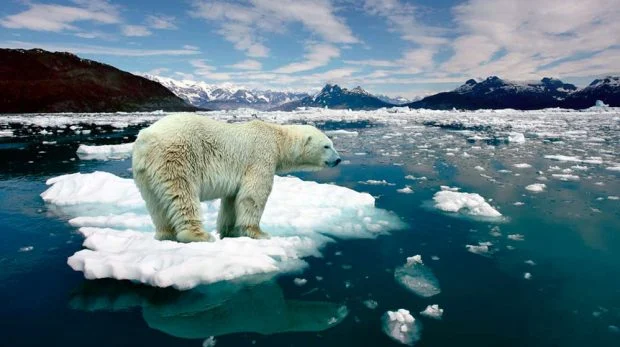
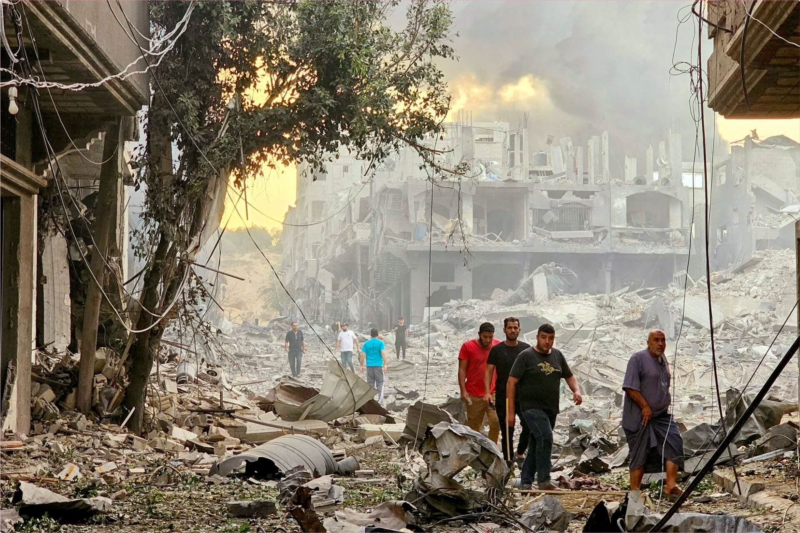
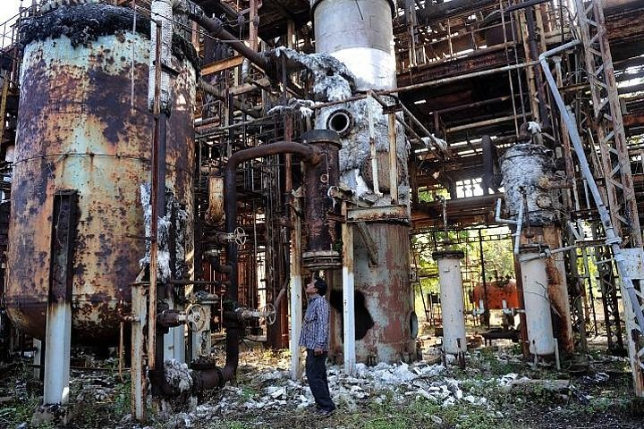
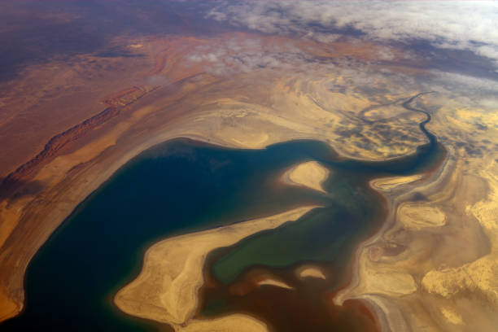

Desastres Ambientales En latinoamerica
1. Derrame de Petróleo en el Golfo de Mexico (Deepwater Horizon)

Impacto devastador en los ecosistemas marinos y la biodiversidad costera.
Leer investigación completa en ADN402. Los científicos no dan crédito a lo que está pasando en el Amazonas en Brasil: los datos más bajos registrados en la historia

La pérdida de los "pulmones del mundo" debido a la tala ilegal.
Leee la informacion completa en MSN3. Gran Mancha de Basura del Pacífico

Millones de toneladas de microplásticos afectando la cadena alimenticia.
Informe National Geographic4. Cambio Climático en los Polos: Consecuencias Impactantes del Deshielo Polar en Nuestro Planeta

Aumento del nivel del mar y pérdida de hábitat para especies polares.
Reportajes de Instituto del AguaCatástrofes Históricas Mundiales
Chernóbil (Desastre Nuclear)
El accidente nuclear más grave de la historia que dejó una zona de exclusión por siglos.
Reportaje National GeographicGuerra en Oriente Medio: un conflicto que se desborda por todas partes

Conflictos bélicos que han causado destrucción de suelos y contaminación química masiva.
Reportaje Oficial de la ONULa catástrofe industrial más grande de la historia

Fuga de gas tóxico en la India que afectó a miles de personas de forma irreversible.
Reportaje Gobierno de MéxicoEl Mar de Aral: así se produjo el mayor desastre ecológico del siglo XX

Uno de los mayores desastres ecológicos modernos: un mar convertido en desierto de sal.
Reportaje Los 40